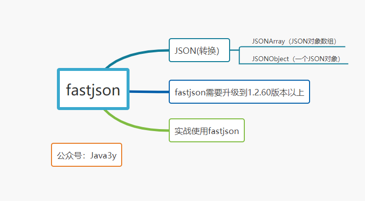
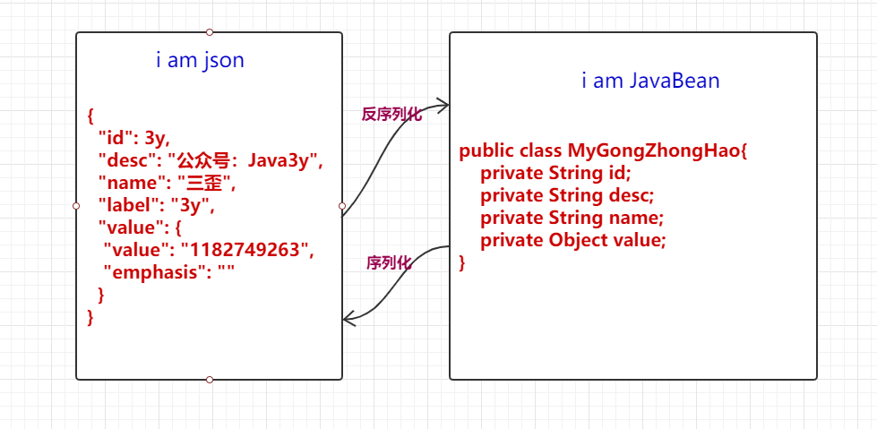
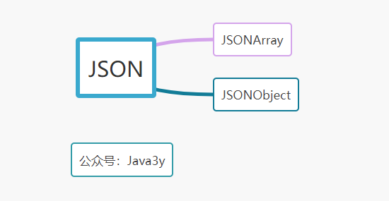
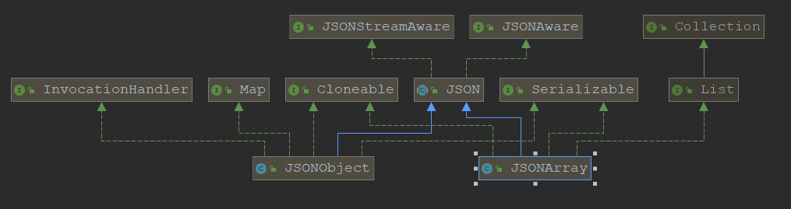
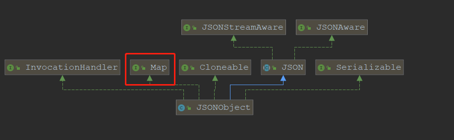
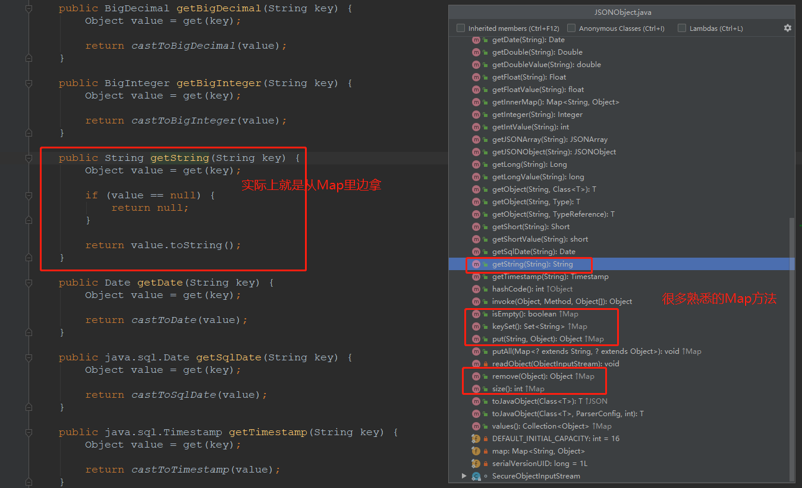
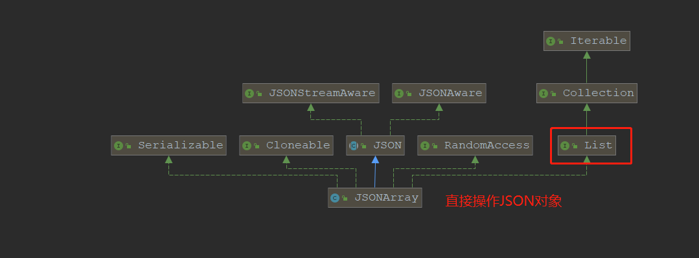
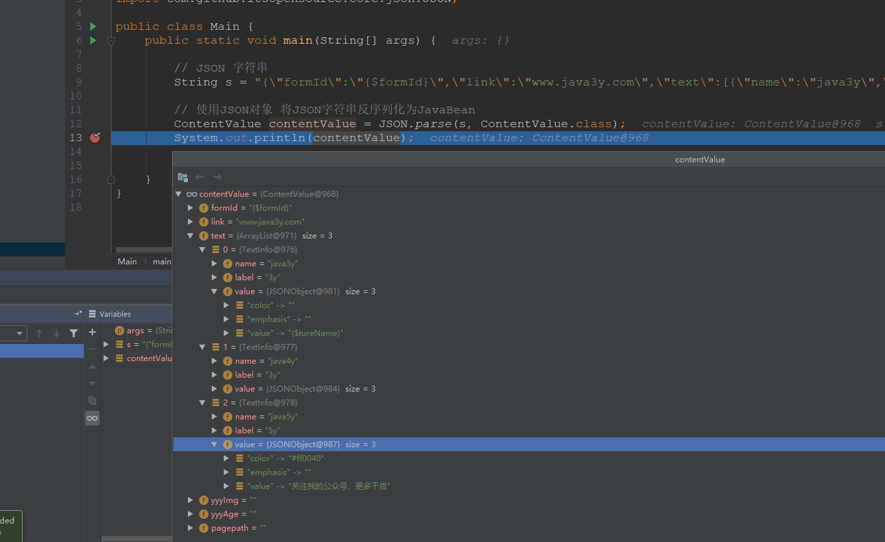
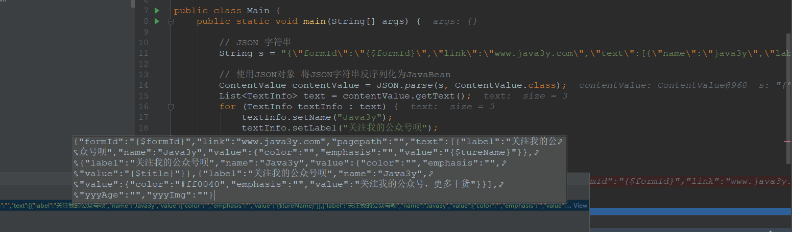

原文连接:https://www.cnblogs.com/Java3y/p/12036772.html
前言
只有光头才能变强。
文本已收录至我的GitHub精选文章，欢迎Star：https://github.com/ZhongFuCheng3y/3y
JSON相信大家对他也不陌生了，前后端交互中常常就以JSON来进行数据交换。而有的时候，我们也会将JSON直接保存在数据库中。
可能就有人不太理解，为什么要将JSON保存在关系型数据库中？
我在最开始的时候也有类似的疑惑，问了几个同事，得出的结论都差不多：方便扩展，如果那些字段不需要用到索引，改动比较频繁，你又不想改动表的结构，那就可以在数据库中存入JSON
虽说存JSON会方便扩展，但如果你的MySQL版本还是相对较低的话，想要用SQL查JSON里某个属性，还是比较麻烦的。
并且从数据库里边取出来也仅仅是一个String，而想要操作JSON里边的属性，自己写不太方便，所以就有fastjson给我们去用。

这篇文章简单讲讲fastjson的使用，希望对大家有帮助。如果有帮助，给我点个赞呀！
一、fastjson入门
以下内容来源：https://github.com/alibaba/fastjson/wiki/Quick-Start-CN
它可以解析JSON格式的字符串，支持将Java Bean序列化为JSON字符串，也可以从JSON字符串反序列化到JavaBean

fastjson优点：速度快、使用广泛、使用简单、功能完备、测试完备（之前爆了很多漏洞，现在我司走发布流程都强制我们升级fastjson版本了），现在使用fastjson至少升级到1.2.60版本
速度快的原因：
1、自行编写类似StringBuilder的工具类SerializeWriter。
2、使用ThreadLocal来缓存buf。
3、使用asm避免反射
4、集成jdk实现的一些优化算法
二、使用fastjson
首先我们在pom文件中引入fastjson的依赖就好了：
<dependency>
<groupId>com.alibaba</groupId>
<artifactId>fastjson</artifactId>
<version>x.x.x</version>
</dependency>fastjson的使用主要是三个对象：
- JSON
- JSONObject
- JSONArray

JSONArray和JSONObject继承JSON：

2.1 JSON对象
JSON这个类主要用于转换：
- 将Java对象序列化为JSON字符串
- 将JSON字符串反序列化为Java对象
所以，有三个方法我们用得特别多：
parseObject(String text, Class<T> clazz)parseArray(String text, Class<T> clazz)toJSONString(Object object)
2.2 JSONObject
JSON对象(JSONObject)中的数据都是以key-value形式出现，所以它实现了Map接口：

使用起来也很简单，跟使用Map就没多大的区别（因为它底层实际上就是操作Map)，常用的方法：
getString(String key)remove(Object key)

2.3 JSONArray
JSONArray则是JSON数组，JSON数组对象中存储的是一个个JSON对象，所以类中的方法主要用于直接操作JSON对象

最常用的方法：
getJSONObject(int index)
## 三、实战
从上面的简单介绍我们已经可以知道了：
- JSON用于将字符串反序列化为JavaBean和JavaBean序列化为JSON
- JSONObject代表的是JSON对象，底层通过Map来操作，常用
getString等方法来获取对应的值 - JSONArray代表的是JSON对象数组，底层实际上是List，它用作于操作JSON对象
一般来说，我们从数据库拿到JSON数据以后，然后要对JSON进行修改。比如JSON串如下：
{
"formId": "{$formId}",
"link": "www.java3y.com",
"text": [{
"name": "java3y",
"label": "3y",
"value": {
"value": "{$tureName}",
"color": "",
"emphasis": ""
}
}, {
"name": "java4y",
"label": "3y",
"value": {
"value": "{$title}",
"color": "",
"emphasis": ""
}
}, {
"name": "java5y",
"label": "5y",
"value": {
"value": "关注我的公众号，更多干货",
"color": "#ff0040",
"emphasis": ""
}
}],
"yyyImg": "",
"yyyAge": "",
"pagepath": ""
}我们是不会直接操作JSON的，我们会将JSON转成我们自己的JavaBean，再操作JavaBean，最后序列化为JSONString
从上面的JSON结构上来看还是相对复杂的，思路：
- 我们可以根据
JSON的结构构建对应的JavaBean - 使用
JSON类将JSON字符串反序列化为JavaBean - 修改JavaBean的值
- 最后将
JavaBean序列化为JSON字符串
从上面的JSON结构，首先我们针对text这层抽象为一个JavaBean。（实际上最里层的结构是value，但我这边不需要处理value，所以就不抽象了）
/**
* "name": "java3y",
* "label": "3y",
* "value": {
* "value": "{$tureName}",
* "color": "",
* "emphasis": ""
* }
*
* 对Text进行抽象
*/
public class TextInfo {
private String name;
private String label;
// 因为value我这边不需要操作，所以就不抽象了，如果每层都要处理，那就得抽象
private Object value;
// set get ... 省略 欢迎关注我的公众号：Javay
}然后对外层进行抽象：
public class ContentValue {
private String formId;
private String link;
// 这里是一个数组，我们就抽象为List，属性名为text
private List<TextInfo> text;
private String yyyImg;
private String yyyAge;
private String pagepath;
// set get ... 省略 欢迎关注我的公众号：Javay
}
我们反序列化看一下：
public static void main(String[] args) {
// JSON 字符串
String s = "{\"formId\":\"{$formId}\",\"link\":\"www.java3y.com\",\"text\":[{\"name\":\"java3y\",\"label\":\"3y\",\"value\":{\"value\":\"{$tureName}\",\"color\":\"\",\"emphasis\":\"\"}},{\"name\":\"java4y\",\"label\":\"3y\",\"value\":{\"value\":\"{$title}\",\"color\":\"\",\"emphasis\":\"\"}},{\"name\":\"java5y\",\"label\":\"5y\",\"value\":{\"value\":\"关注我的公众号，更多干货\",\"color\":\"#ff0040\",\"emphasis\":\"\"}}],\"yyyImg\":\"\",\"yyyAge\":\"\",\"pagepath\":\"\"}";
// 使用JSON对象 将JSON字符串反序列化为JavaBean
ContentValue contentValue = JSON.parse(s, ContentValue.class);
System.out.println(contentValue);
}反序列化结果：

我们要改text里边的值，只需要操作JavaBean就好了：
public static void main(String[] args) {
// JSON 字符串
String s = "{\"formId\":\"{$formId}\",\"link\":\"www.java3y.com\",\"text\":[{\"name\":\"java3y\",\"label\":\"3y\",\"value\":{\"value\":\"{$tureName}\",\"color\":\"\",\"emphasis\":\"\"}},{\"name\":\"java4y\",\"label\":\"3y\",\"value\":{\"value\":\"{$title}\",\"color\":\"\",\"emphasis\":\"\"}},{\"name\":\"java5y\",\"label\":\"5y\",\"value\":{\"value\":\"关注我的公众号，更多干货\",\"color\":\"#ff0040\",\"emphasis\":\"\"}}],\"yyyImg\":\"\",\"yyyAge\":\"\",\"pagepath\":\"\"}";
// 使用JSON对象 将JSON字符串反序列化为JavaBean
ContentValue contentValue = JSON.parse(s, ContentValue.class);
List<TextInfo> text = contentValue.getText();
for (TextInfo textInfo : text) {
textInfo.setName("Java3y");
textInfo.setLabel("关注我的公众号呗");
}
// 修改后，反序列化回去
String content = JSON.toJSONString(contentValue);
}序列化结果：

轻松将JSON字符串里边的字段改掉。
最后
总的来说，fastjson还是足够方便好用的，它的速度也很快，只是最近漏洞有点多。
本已收录至我的GitHub精选文章，欢迎Star：https://github.com/ZhongFuCheng3y/3y
乐于输出干货的Java技术公众号：Java3y。公众号内有300多篇原创技术文章、海量视频资源、精美脑图，关注即可获取！

非常感谢人才们能看到这里，如果这个文章写得还不错，觉得「三歪」我有点东西的话 求点赞 求关注️ 求分享👥 求留言💬 对暖男我来说真的 非常有用！！！
创作不易，各位的支持和认可，就是我创作的最大动力，我们下篇文章见！